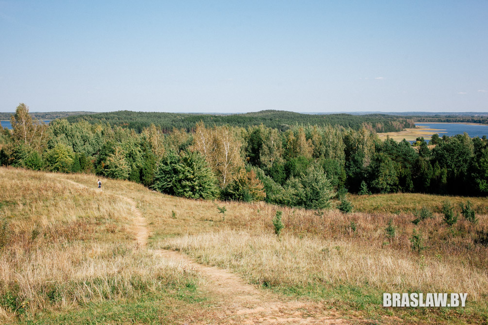
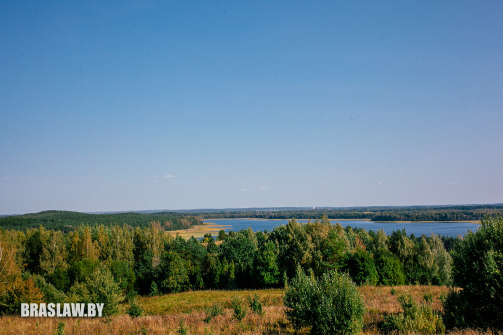
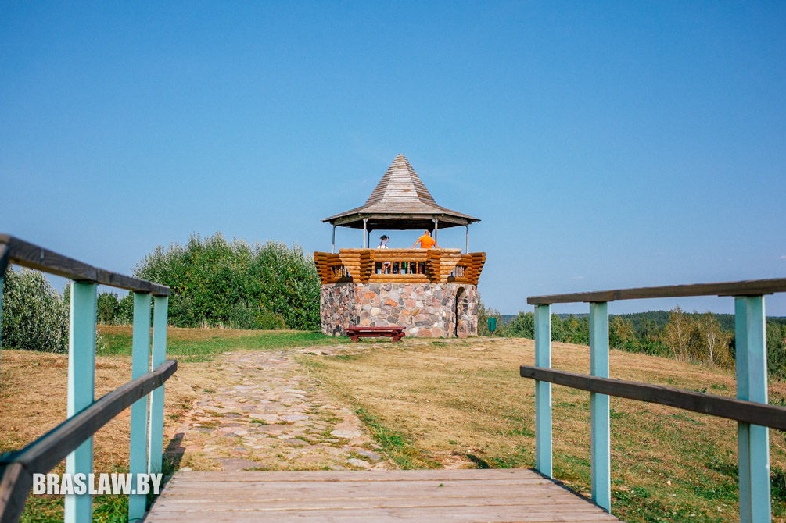
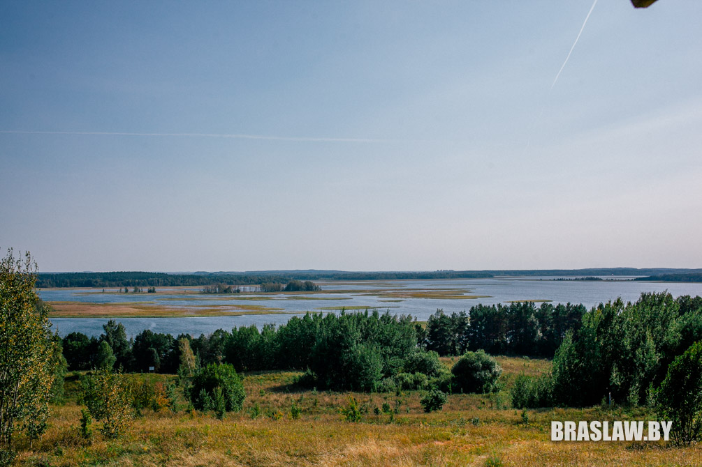
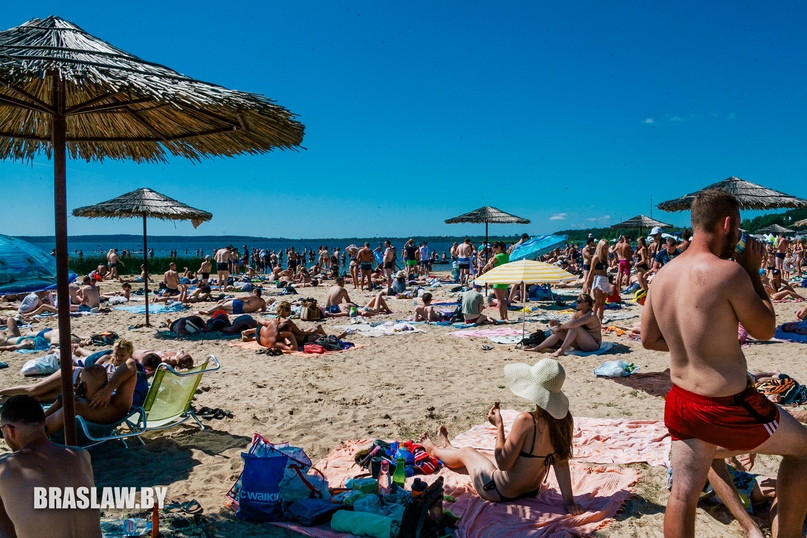
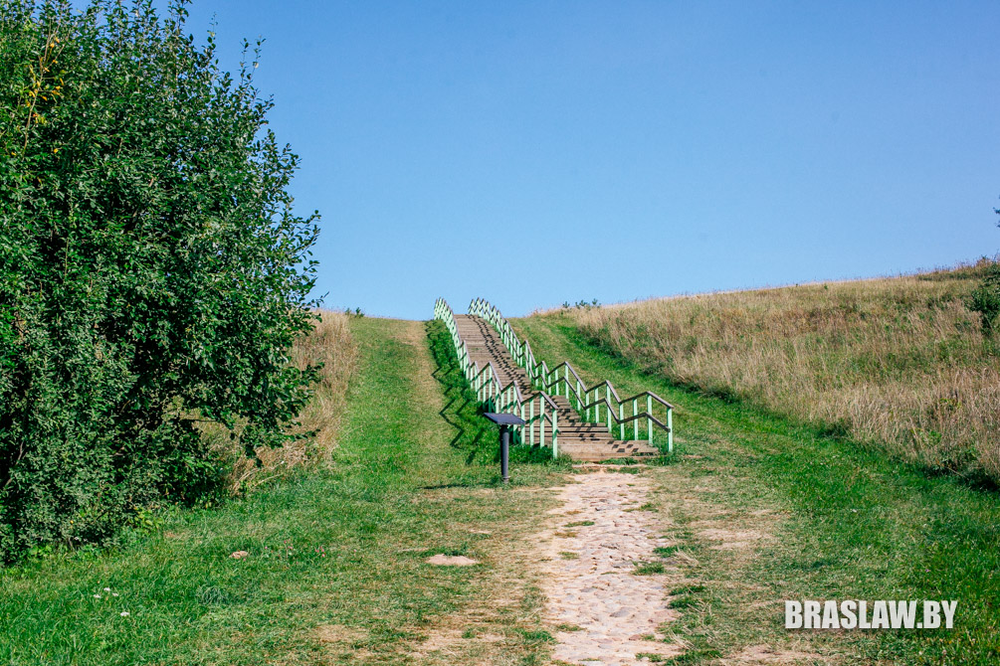
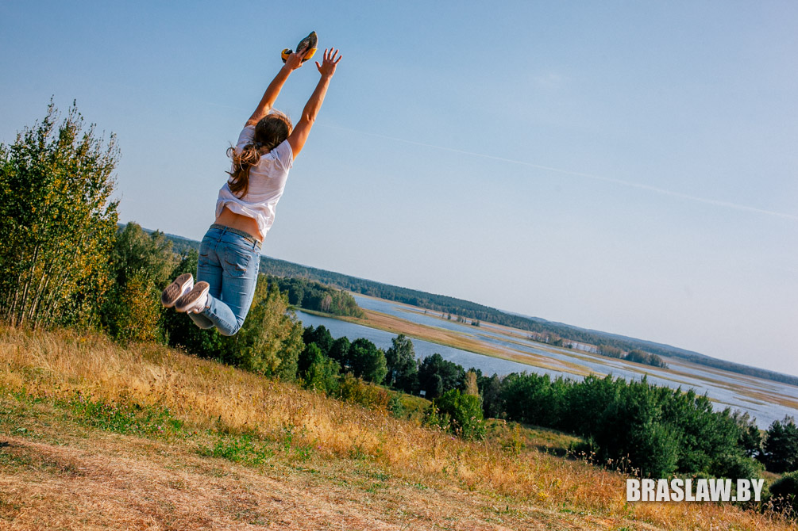

Что нужно сделать, чтобы Браслав стал идеальным туристическим курортом?

Туристический сезон на Браславских озерах подходит к концу, вода в озерах уже бодрит, а на звездном небе можно увидеть искры метеоров. В Браславе стало спокойно, и скоро город начнет готовиться к зимней спячке. Этим летом многое пришлось услышать насчет нашего курорта - и хорошее, и плохое. Мы поинтересовались у читателей, чего же не хватало городу, чтобы туристы могли назвать его "идеальным", и вместе помечтали о том, каким Браслав может стать, если...
В социальных сетях было очень много комментариев, которые для удобства мы разделили на несколько групп и подготовили краткий "план" по улучшению Браслава в туристической отрасли. Предпринимателям и инвесторам на заметку:-)
ИНФРАСТРУКТУРА
Самым большим разделом получился блок, который касается вопросов инфраструктуры. В самом деле, когда побываешь в Юрмале, Львове или Коктебеле, то помимо своей воли всегда проводишь параллель с нашим городом, и начинаешь мечтать... Хотя некоторые мечты иногда кажутся вполне реализуемыми.
Многие читатели обращают внимание на то, что городу в летний сезон не хватает небольших объектов общепита - кофеен, чебуречных, пивных. Кто-то предложил идею, что в зоне брукованки можно было бы установить небольшие разборные павильоны и сдавать их в аренду всем, желающим заработать (на еде, на сувенирах, на экскурсиях) - то есть в городе должно быть туристическое ядро, где гости могли бы узнать информацию о регионе, подкрепиться и просто потусоваться:-)

Некоторые комментаторы предлагают делать акцент на активных видах отдыха - продвигать велотуризм и байдарочные походы, а еще построить в Браславе бассейн и лыжероллерную трассу (идеальное место - Дубки). Но начать нужно хотя бы с велодорожки, маршрутов и проката велосипедов, лодок, палаток и спальников (на самом деле существует несколько прокатных точек, но им явно не хватает рекламы - ред.)

Большой проблемой для отдыхающих является отсутствие мест для семейного отдыха. Кто-то из читателей предложил трансформировать парк возле гимназии в лаунж-зону - построить терассы с навесами и большим количеством мест, дать возможность предпринимателям открыть небольшие временные кафешки (как в минском парке Челюскинцев, например), где можно было бы уютно посидеть с детьми. Это логично, учитывая, что начало уже есть - построен веревочный парк (который, правда, не функционирует). А потом можно будет установить и аттракционы (напоминаем, что сейчас мы мечтаем - ред.).
РЕКЛАМА
Настоящей проблемой многие считают недостаточное количество рекламы Браславского региона. В районе есть много интересных разработанных маршрутов, агроусадеб, крутых мастер-классов по ремеслам, но, к сожалению, о них почти никто не знает. Читатели считают, что в Браславе и по району нужно установить больше билбордов и указателей, бесплатно раздавать путеводители и карты, чтобы туристам было легче ориентироваться в поиске жилья на Браславских озерах, и быстро находить, где можно перекусить, развлечься или купить сувениры.
Не хватает городу и большой доски с анонсами мероприятий, установленной, например, в районе брукованки.

ВЛАСТЬ И БЛАГОУСТРОЙСТВО
Некоторые читатели считают, что развитие туристического региона связано в первую очередь с властями, которые должны a priori любить город и думать в первую очередь не о собственной выгоде. И сетуют, что Браславу не хватает креативного руководителя, который смог бы акцентировать внимание на туризме.
Кто-то обращает внимание на то, что национальный парк, который должен приносить средства в бюджет города, находится в юрисдикции управления делами Президента Республики Беларусь, а поэтому деньги "уходят" выше. Есть вопросы и по ценам на стоянки для местных жителей.
Очень много недовольных комментариев касаются дорог в Браславском районе и в самом городе, а также деревьев и зеленых зон. Старожилы вспоминают, что раньше Браслав был "городом-садом", а сейчас выглядит менее привлекательно. А еще люди не понимают, зачем перекрыли половину парка возле гимназии, хотя там было удобно отдыхать.

Есть вопросы у браславчан и по пляжу. Дескать, нужен человек, который будет внимательно следить за его чистотой хотя бы в летний период. А еще кто-то задал вопрос о лестнице, которая ведет от костела на Замковую гору - несмотря на то, что старую деревянную разобрали, туристы поднимаются по крутому склону, хотя больших вложений для установки такой же лестницы не требуется (причем ее можно построить без того, чтобы вредить "памятнику культуры"). Обратили внимание и на общественные туалеты, которых не хватает в самых людных местах.
Отдельной темой стала проблема зарастания озер - жители хотели бы видеть берега красивыми, без камышей и водорослей хотя бы в местах купания. Кто-то отметил проблемы с парковкой возле пляжа в часы пик.

ГЛОБАЛЬНОЕ
По инфраструктуре у читателей было еще много предложений - и разрешение на организацию рыбных ларьков, и строительство хостелов (в Браславе нет ни одного), установку арт-объектов, организацию круглосуточного магазина с обменником и даже банально - бесплатный wifi на автостанции и ТЦ.
Все это хорошо, и, наверно, в ближайшие годы Браславщина продолжит двигаться к этим целям, но как заметило несколько комментаторов, нужно смотреть глубже. Туристический сезон в Браславе продолжается полтора-два месяца (июль-август), очень зависит от погоды и факторов, которые были написаны выше. А учитывая, что с вакансиями в районе грустно и молодежь предпочитает искать работу в других городах, нужно думать, каким образом завлечь людей в наш город.

Было очень интересное предложение об организации учебного учреждения - открытии в Браславе колледжа, связанного с туристической отраслью или IT. К месту пришелся бы вариант создания центра для IT-компаний, которые могут инвестировать в регион.
Кто-то предлагет построить в районе мусороперерабатывающий завод, который как раз вписался бы в тему климатически нейтрального региона; кто-то мечтает о создании аэроклуба или строительстве санатория (пансионата) для зарубежных гостей.
А еще обратили внимание на то, что Браславщина - пограничный регион, и обязательно нужно оформить для европейцев безвизовый режим или хотя бы снизить стоимость визы.

подготовил Гальляш Сялява
фото автора